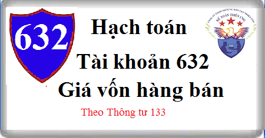

Hướng dẫn cách hạch toán Tài khoản 632 theo thông tư 133, Cách hạch toán giá vốn hàng bán sản phẩm, hàng hóa, dịch vụ, hàng bán bị trả lại, trích lập dự phòng giảm giá hàng tồn kho, chiết khấu thương mại hoặc giảm giá hàng bán nhận được, kết chuyển chi phí giá vốn ...
1. Nguyên tắc kế toán Tài khoản 632 - Giá vốn hàng bán
a) Tài khoản này dùng để phản ánh trị giá vốn của sản phẩm, hàng hóa, dịch vụ, bất động sản đầu tư; giá thành sản xuất của sản phẩm xây lắp (đối với doanh nghiệp xây lắp) bán trong kỳ. Ngoài ra, tài khoản này còn dùng để phản ánh các chi phí liên quan đến hoạt động kinh doanh bất động sản đầu tư như: Chi phí khấu hao; chi phí sửa chữa; chi phí cho thuê BĐSĐT theo phương thức cho thuê hoạt động; chi phí nhượng bán, thanh lý BĐSĐT…
b) Khoản dự phòng giảm giá hàng tồn kho được tính vào giá vốn hàng bán trên cơ sở số lượng hàng tồn kho và phần chênh lệch giữa giá trị thuần có thể thực hiện được nhỏ hơn giá gốc hàng tồn kho. Khi xác định khối lượng hàng tồn kho bị giảm giá cần phải trích lập dự phòng, kế toán phải loại trừ khối lượng hàng tồn kho đã ký được hợp đồng tiêu thụ (có giá trị thuần có thể thực hiện được không thấp hơn giá trị ghi sổ) nhưng chưa chuyển giao cho khách hàng nếu có bằng chứng chắc chắn về việc khách hàng sẽ không từ bỏ thực hiện hợp đồng và loại trừ hàng tồn kho dùng cho hoạt động xây dựng cơ bản, giá trị hàng tồn kho dùng cho sản xuất sản phẩm mà sản phẩm được tạo ra từ những hàng tồn kho này có giá bán bằng hoặc cao hơn giá thành sản xuất của sản phẩm.
c) Đối với phần giá trị hàng tồn kho hao hụt, mất mát, kế toán phải tính ngay vào giá vốn hàng bán (sau khi trừ đi các khoản bồi thường, nếu có).
d) Các khoản thuế nhập khẩu, thuế tiêu thụ đặc biệt, thuế bảo vệ môi trường đã tính vào giá trị hàng mua, nếu khi xuất bán hàng hóa mà các khoản thuế đó được hoàn lại thì được ghi giảm giá vốn hàng bán.
e) Các khoản chi phí không được coi là chi phí được trừ theo quy định của Luật thuế TNDN nhưng có đầy đủ hóa đơn chứng từ và đã hạch toán đúng theo Chế độ kế toán thì không được ghi giảm chi phí kế toán mà chỉ điều chỉnh trong quyết toán thuế TNDN để làm tăng số thuế TNDN phải nộp.
2. Kết cấu và nội dung phản ánh của Tài khoản 632 - Giá vốn hàng bán
2.1. Trường hợp doanh nghiệp kế toán hàng tồn kho theo phương pháp kê khai thường xuyên.
Bên Nợ:
- Đối với hoạt động sản xuất, kinh doanh, phản ánh:
+ Trị giá vốn của sản phẩm, hàng hóa, dịch vụ đã bán trong kỳ.
+ Chi phí nguyên liệu, vật liệu, chi phí nhân công vượt trên mức bình thường và chi phí sản xuất chung cố định không phân bổ được tính vào giá vốn hàng bán trong kỳ;
+ Các khoản hao hụt, mất mát của hàng tồn kho sau khi trừ phần bồi thường do trách nhiệm cá nhân gây ra;
+ Số trích lập dự phòng giảm giá hàng tồn kho (chênh lệch giữa số dự phòng giảm giá hàng tồn kho phải lập năm nay lớn hơn số dự phòng đã lập năm trước chưa sử dụng hết).
- Đối với hoạt động kinh doanh BĐSĐT, phản ánh:
+ Số khấu hao BĐSĐT dùng để cho thuê hoạt động trích trong kỳ;
+ Chi phí sửa chữa, nâng cấp, cải tạo BĐSĐT không đủ điều kiện tính vào nguyên giá BĐSĐT;
+ Chi phí phát sinh từ nghiệp vụ cho thuê hoạt động BĐSĐT trong kỳ;
+ Giá trị còn lại của BĐSĐT bán, thanh lý trong kỳ;
+ Chi phí của nghiệp vụ bán, thanh lý BĐSĐT phát sinh trong kỳ;
+ Số tổn thất do giảm giá trị BĐSĐT nắm giữ chờ tăng giá;
+ Chi phí trích trước đối với hàng hóa bất động sản được xác định là đã bán.
Bên Có:
- Kết chuyển giá vốn của sản phẩm, hàng hóa, dịch vụ đã bán trong kỳ sang tài khoản 911 “Xác định kết quả kinh doanh”;
- Kết chuyển toàn bộ chi phí kinh doanh BĐSĐT phát sinh trong kỳ để xác định kết quả hoạt động kinh doanh;
- Khoản hoàn nhập dự phòng giảm giá hàng tồn kho cuối năm tài chính (chênh lệch giữa số dự phòng phải lập năm nay nhỏ hơn số đã lập năm trước);
- Trị giá hàng bán bị trả lại;
- Khoản hoàn nhập chi phí trích trước đối với hàng hóa bất động sản được xác định là đã bán (chênh lệch giữa số chi phí trích trước còn lại cao hơn chi phí thực tế phát sinh);
- Khoản chiết khấu thương mại, giảm giá hàng bán nhận được sau khi hàng mua đã tiêu thụ;
- Số điều chỉnh tăng nguyên giá BĐSĐT nắm giữ chờ tăng giá khi có bằng chứng chắc chắn cho thấy BĐSĐT có dấu hiệu tăng giá trở lại;
- Các khoản thuế nhập khẩu, thuế tiêu thụ đặc biệt, thuế bảo vệ môi trường đã tính vào giá trị hàng mua, nếu khi xuất bán hàng hóa mà các khoản thuế đó được hoàn lại.
Tài khoản 632 không có số dư cuối kỳ.
2.2. Trường hợp doanh nghiệp kế toán hàng tồn kho theo phương pháp kiểm kê định kỳ.
2.2.1. Đối với doanh nghiệp kinh doanh thương mại
Bên Nợ:
- Trị giá vốn của hàng hóa đã xuất bán trong kỳ.
- Số trích lập dự phòng giảm giá hàng tồn kho (chênh lệch giữa số dự phòng phải lập năm nay lớn hơn số đã lập năm trước chưa sử dụng hết).
Bên Có:
- Kết chuyển giá vốn của hàng hóa đã gửi bán nhưng chưa được xác định là tiêu thụ;
- Hoàn nhập dự phòng giảm giá hàng tồn kho cuối năm tài chính (chênh lệch giữa số dự phòng phải lập năm nay nhỏ hơn số đã lập năm trước);
- Kết chuyển giá vốn của hàng hóa đã xuất bán vào bên Nợ tài khoản 911 “Xác định kết quả kinh doanh”.
2.2.2. Đối với doanh nghiệp sản xuất và kinh doanh dịch vụ
Bên Nợ:
- Trị giá vốn của thành phẩm, dịch vụ tồn kho đầu kỳ;
- Số trích lập dự phòng giảm giá hàng tồn kho (chênh lệch giữa số dự phòng phải lập năm nay lớn hơn số dự phòng đã lập năm trước chưa sử dụng hết);
- Trị giá vốn của thành phẩm sản xuất xong nhập kho và dịch vụ đã hoàn thành.
Bên Có:
- Kết chuyển giá vốn của thành phẩm, dịch vụ tồn kho cuối kỳ vào bên Nợ TK 155 “Thành phẩm”; TK 154 “Chi phí sản xuất kinh doanh, dở dang”;
- Hoàn nhập dự phòng giảm giá hàng tồn kho cuối năm tài chính (chênh lệch giữa số dự phòng phải lập năm nay nhỏ hơn số đã lập năm trước chưa sử dụng hết);
- Kết chuyển giá vốn của thành phẩm đã xuất bán, dịch vụ hoàn thành được xác định là đã bán trong kỳ vào bên Nợ TK 911 “Xác định kết quả kinh doanh”.
Tài khoản 632 không có số dư cuối kỳ.
3. Cách hạch toán giá vốn hàng bán Tài khoản 632
3.1. Đối với doanh nghiệp kế toán hàng tồn kho theo phương pháp kê khai thường xuyên.
a) Khi xuất bán các sản phẩm, hàng hóa, dịch vụ hoàn thành được xác định là đã bán trong kỳ, ghi:
Nợ TK 632 - Giá vốn hàng bán
Có các Tài khoản 154, 155, 156, 157,…
b) Phản ánh các khoản chi phí được hạch toán trực tiếp vào giá vốn hàng bán:
- Phản ánh khoản hao hụt, mất mát của hàng tồn kho sau khi trừ (-) phần bồi thường do trách nhiệm cá nhân gây ra, ghi:
Nợ TK 632 - Giá vốn hàng bán
Có các Tài khoản 152, 153, 156, 138 (1381),…
c) Hạch toán khoản trích lập hoặc hoàn nhập dự phòng giảm giá hàng tồn kho:
- Trường hợp số dự phòng giảm giá hàng tồn kho phải lập kỳ này lớn hơn số đã lập kỳ trước, kế toán trích lập bổ sung phần chênh lệch, ghi:
Nợ TK 632 - Giá vốn hàng bán
Có TK 229 - Dự phòng tổn thất tài sản (2294).
- Trường hợp số dự phòng giảm giá hàng tồn kho phải lập kỳ này nhỏ hơn số đã lập kỳ trước, kế toán hoàn nhập phần chênh lệch, ghi:
Nợ TK 229 - Dự phòng tổn thất tài sản (2294)
Có TK 632 - Giá vốn hàng bán.
d) Các nghiệp vụ kinh tế liên quan đến hoạt động kinh doanh BĐS đầu tư:
- Định kỳ tính, trích khấu hao BĐS đầu tư đang cho thuê hoạt động, ghi:
Nợ TK 632 - Giá vốn hàng bán (chi tiết chi phí kinh doanh BĐS đầu tư)
Có TK 2147 Hao mòn BĐS đầu tư.
- Khi phát sinh chi phí liên quan đến BĐS đầu tư sau ghi nhận ban đầu nếu không thoả mãn điều kiện ghi tăng giá trị BĐS đầu tư, ghi:
Nợ TK 632 - Giá vốn hàng bán (chi tiết chi phí kinh doanh BĐS đầu tư)
Nợ TK 242 - Chi phí trả trước (nếu phải phân bổ dần)
Có các TK 111, 112, 152, 153, 334,…
- Các chi phí liên quan đến cho thuê hoạt động BĐS đầu tư, ghi:
Nợ TK 632 - Giá vốn hàng bán (chi tiết chi phí kinh doanh BĐS đầu tư)
Có các Tài khoản 111, 112, 331, 334,...
- Kế toán giảm nguyên giá và giá trị hao mòn của BĐS đầu tư (nếu có) do bán, thanh lý, ghi:
Nợ TK 214 - Hao mòn TSCĐ (2147 - Hao mòn BĐS đầu tư)
Nợ TK 632 - Giá vốn hàng bán (giá trị còn lại của BĐS đầu tư)
Có TK 217 Bất động sản đầu tư (nguyên giá).
- Các chi phí bán, thanh lý BĐS đầu tư phát sinh, ghi:
Nợ TK 632 - Giá vốn hàng bán (chi tiết chi phí kinh doanh BĐS đầu tư)
Nợ TK 133 - Thuế GTGT được khấu trừ (nếu có)
Có các TK 111, 112, 331,...
đ) Hàng bán bị trả lại nhập kho, ghi:
Nợ các Tài khoản 155,156
Có TK 632 - Giá vốn hàng bán.
e) Trường hợp khoản chiết khấu thương mại hoặc giảm giá hàng bán nhận được sau khi mua hàng, kế toán phải căn cứ vào tình hình biến động của hàng tồn kho để phân bổ số chiết khấu thương mại, giảm giá hàng bán được hưởng dựa trên số hàng tồn kho chưa tiêu thụ, số đã xuất dùng cho hoạt động đầu tư xây dựng hoặc đã xác định là tiêu thụ trong kỳ:
Nợ các TK 111, 112, 331…
Có các TK 152, 153, 154, , 155, 156 (giá trị khoản CKTM, GGHB của số hàng tồn kho chưa tiêu thụ trong kỳ)
Có TK 241 - Xây dựng cơ bản dở dang (giá trị khoản CKTM, GGHB của số hàng tồn kho đã xuất dùng cho hoạt động đầu tư xây dựng)
Có TK 632 - Giá vốn hàng bán (giá trị khoản CKTM, GGHB của số hàng tồn kho đã tiêu thụ trong kỳ).
k) Kết chuyển giá vốn hàng bán của các sản phẩm, hàng hóa, bất động sản đầu tư, dịch vụ được xác định là đã bán trong kỳ vào bên Nợ tài khoản 911 “Xác định kết quả kinh doanh”, ghi:
Nợ TK 911 - Xác định kết quả kinh doanh
Có TK 632 - Giá vốn hàng bán.
3.2) Đối với doanh nghiệp kế toán hàng tồn kho theo phương pháp kiểm kê định kỳ
a) Đối với doanh nghiệp thương mại:
- Đầu kỳ, kết chuyển trị giá của thành phẩm tồn kho đầu kỳ vào Tài khoản 632 – Giá vốn hàng bán, ghi:
Nợ TK 632 - Giá vốn hàng bán
Có TK 156 Hàng hóa
- Cuối kỳ, xác định và kết chuyển trị giá vốn của hàng hóa đã xuất bán, được xác định là đã bán, ghi:
Nợ TK 632 - Giá vốn hàng bán.
Có TK 611 Mua hàng.
- Cuối kỳ, kết chuyển giá vốn hàng hóa đã xuất bán được xác định là đã bán vào bên Nợ tài khoản 911 “Xác định kết quả kinh doanh”, ghi:
Nợ TK 911 - Xác định kết quả kinh doanh
Có TK 632 - Giá vốn hàng bán.
b) Đối với doanh nghiệp sản xuất và kinh doanh dịch vụ :
- Đầu kỳ, kết chuyển trị giá vốn của thành phẩm tồn kho đầu kỳ vào tài khoản 632 “Giá vốn hàng bán”, ghi:
Nợ TK 632 - Giá vốn hàng bán
Có TK 155 - Thành phẩm.
- Đầu kỳ, kết chuyển trị giá của thành phẩm, dịch vụ đã gửi bán nhưng chưa được xác định là đã bán vào tài khoản 632 “Giá vốn hàng bán”, ghi:
Nợ TK 632 - Giá vốn hàng bán
Có TK 157 - Hàng gửi đi bán.
- Giá thành của thành phẩm hoàn thành nhập kho, giá thành dịch vụ đã hoàn thành, ghi:
Nợ TK 632 - Giá vốn hàng bán
Có TK 631 - Giá thành sản phẩm.
- Cuối kỳ, kết chuyển giá vốn của thành phẩm tồn kho cuối kỳ vào bên Nợ tài khoản 155 “Thành phẩm”, ghi:
Nợ TK 155 - Thành phẩm
Có TK 632 - Giá vốn hàng bán.
- Cuối kỳ, xác định trị giá của thành phẩm, dịch vụ đã gửi bán nhưng chưa được xác định là đã bán, ghi:
Nợ TK 157 - Hàng gửi đi bán
Có TK 632 - Giá vốn hàng bán.
- Cuối kỳ, kết chuyển giá vốn của thành phẩm, dịch vụ đã được xác định là đã bán trong kỳ vào bên Nợ tài khoản 911 “Xác định kết quả kinh doanh”, ghi:
Nợ TK 911 - Xác định kết quả kinh doanh
Có TK 632 - Giá vốn hàng bán.
-------------------------------------
Chúc các bạn thành công! Bạn muốn học cách hoàn thiện sổ sách, kê khai thuế, tính thuế, Lập báo cáo tài chính, Quyết toán thuế thực tế chuyên sâu... Có thể tham gia: Lớp học kế toán thực hành thực tế tại Kế toán Diệu Tâm.
